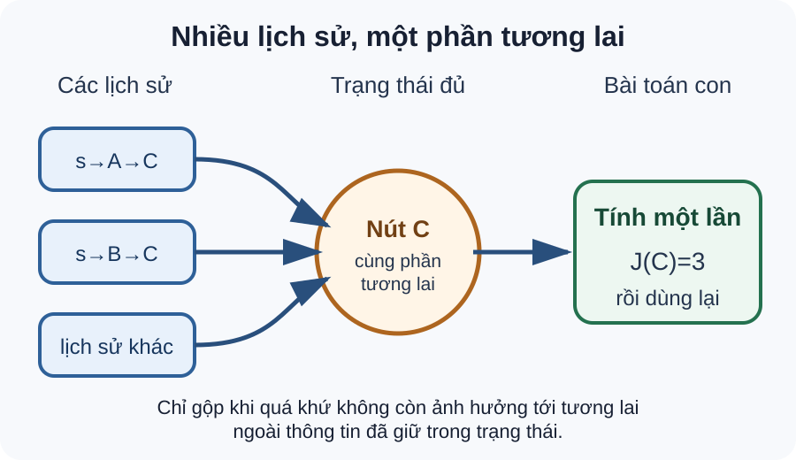
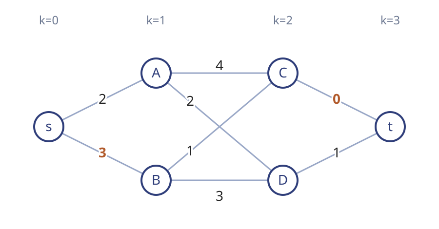

Chỉ so sánh $z$ giữa các phương án khả thi. So sánh vài điểm chưa chứng minh được điểm nào tối ưu.
Định nghĩa quy hoạch tuyến tính
Định nghĩa. Quy hoạch tuyến tính (linear programming, LP) là bài toán tối ưu một hàm tuyến tính trên miền xác định bởi hữu hạn phương trình và bất phương trình tuyến tính. Dạng thường dùng, với $c\in\mathbb R^n$, $A\in\mathbb R^{m\times n}$, $b\in\mathbb R^m$:
Ví dụ. $\min_x|x-1|+|x-3|$ đạt giá trị $2$ tại mọi $x\in[1,3]$.
Bài tập dựng mô hình
Câu hỏi: hai luồng suy luận dùng chung một GPU trong một giờ. Mỗi nghìn yêu cầu của luồng 1 và luồng 2 đem lợi ích $4$ và $5$ đơn vị, dùng $2$ và $1$ phút GPU. GPU có $14$ phút; luồng 1 nhận tối đa $8$ nghìn, luồng 2 tối đa $6$ nghìn yêu cầu.
Nêu biến quyết định và đơn vị.
Viết hàm mục tiêu và chiều tối ưu.
Viết mọi ràng buộc và miền biến.
Kiểm tra tính khả thi và tính $z$ tại $(4,6)$.
B. Đa diện và dạng chuẩn
So sánh từng phương án không chứng minh được tối ưu. Cần nhìn toàn bộ miền khả thi và tính được các đỉnh của nó.
Đa diện: miền khả thi là giao của các nửa không gian.
Dạng chuẩn: biến phụ đưa bất phương trình về phương trình.
Nghiệm cơ sở khả thi: tính một đỉnh bằng một hệ phương trình vuông.
Đa diện và đường mức
Miền khả thi: giao của năm nửa không gian $x_1\le30$, $x_2\le20$, $x_1+2x_2\le54$, $x\ge0$.
Đường mức $2x_1+3x_2=\alpha$: các điểm cùng giá trị $z$; tăng $\alpha$ thì đường dời theo hướng $(2,3)$.
Đường mức xa nhất còn chạm miền: $z=96$, chỉ tại đỉnh $(30,12)$.
Định nghĩa đa diện
Định nghĩa. Đa diện (polyhedron) là tập nghiệm của hữu hạn bất phương trình tuyến tính, với $A\in\mathbb R^{m\times n}$, $b\in\mathbb R^m$:
$$P=\{x\in\mathbb R^n:Ax\le b\}.$$
$P$ lồi vì là giao của các nửa không gian.
$P$ bị chặn nếu có $K$ để $\|x\|\le K$ với mọi $x\in P$. Miền hộp hạt bị chặn; $\{x\in\mathbb R^2:\ x\ge0,\ x_1+x_2\ge1\}$ thì không.
Phương trình $a^Tx=\beta$ tương đương hai bất phương trình, nên $\{x:Ax=b,\ x\ge0\}$ cũng là đa diện.
Dạng chuẩn
Nhu cầu. Mỗi đỉnh là nghiệm duy nhất của một nhóm ràng buộc lấy dấu bằng. Để tính đỉnh bằng giải hệ, cần viết mọi ràng buộc thành phương trình.
Tại đỉnh $(30,12)$: $(s_1,s_2,s_3)=(0,8,0)$. Hai biến phụ bằng $0$ ứng với hai ràng buộc chặt $x_1=30$ và $x_1+2x_2=54$, cắt nhau tại đỉnh.
Nghiệm cơ sở khả thi
Trực quan. Cho $n-m$ biến bằng $0$, rồi giải $m$ biến còn lại từ một hệ vuông.
Định nghĩa. Cho $P=\{x:Ax=b,\ x\ge0\}$, $\operatorname{rank}(A)=m$, và tập chỉ số $B\subset\{1,\ldots,n\}$, $|B|=m$, có ma trận cột $A_B$ khả nghịch. Véc-tơ
Nhu cầu. Định nghĩa điểm cực không cho cách tính; nghiệm cơ sở khả thi thì có.
Định lý. Cho $P=\{x:Ax=b,\ x\ge0\}$, $A\in\mathbb R^{m\times n}$, $\operatorname{rank}(A)=m$, $x\in P$. Các mệnh đề sau tương đương: (i) $x$ là điểm cực của $P$; (ii) $x$ là nghiệm cơ sở khả thi; (iii) các cột $A_j$ ứng với $x_j>0$ độc lập tuyến tính.
Hệ quả. Điểm cực có nhiều nhất $m$ thành phần dương; $P$ có hữu hạn điểm cực.
Ví dụ. Hộp hạt, $(x_1,x_2,s_1,s_2,s_3)=(30,12,0,8,0)$: ba cột dương $(1,0,1)^T,(0,1,2)^T,(0,1,0)^T$ có định thức $-2\ne0$, nên $x$ là điểm cực, ứng với đỉnh $(30,12)$.
Đường mức $z=2$ trùng một cạnh: mọi điểm của cạnh tối ưu.
$(1,1)=\tfrac12(2,0)+\tfrac12(0,2)$ tối ưu nhưng không phải điểm cực.
Có điểm cực tối ưu, nhưng không phải mọi nghiệm tối ưu đều là điểm cực.
Bảo đảm tồn tại điểm cực
Nhu cầu. Kết luận “có điểm cực tối ưu” chỉ có nghĩa khi miền có điểm cực. Nửa mặt phẳng $\{x\in\mathbb R^2:x_2\ge0\}$ không có: mỗi điểm nằm giữa hai điểm khác trên một đường nằm ngang.
Định nghĩa. $P$ chứa đường thẳng nếu có $x\in P$, $d\ne0$ với $x+td\in P$ mọi $t\in\mathbb R$.
Loại
Giả thiết
Kết luận
Định lý
$P$ là đa diện không rỗng
$P$ có điểm cực $\Leftrightarrow$ $P$ không chứa đường thẳng
Hệ quả
$P=\{x:Ax=b,x\ge0\}$ không rỗng
$P$ có ít nhất một điểm cực
Lý do của hệ quả: $x+td\ge0$ với mọi $t\in\mathbb R$ buộc $d=0$.
Bốn kết cục của quy hoạch tuyến tính
Trước khi tìm nghiệm ở điểm cực, cần biết bài toán có nghiệm tối ưu hay không. Mỗi LP rơi vào đúng một trong bốn kết cục (outcome):
Điểm cực tối ưu và đỉnh kề
Định lý. Cho đa diện $P$ có ít nhất một điểm cực. Nếu $\max_{x\in P}c^Tx$ có giá trị tối ưu hữu hạn, thì có một điểm cực tối ưu.
Định nghĩa. Hai điểm cực kề nhau nếu đoạn nối chúng là một cạnh (mặt một chiều) của $P$.
Bổ đề (đỉnh kề cải thiện). Với cùng giả thiết, nếu điểm cực $v$ chưa tối ưu thì có điểm cực $w$ kề $v$ với $c^Tw>c^Tv$.
Ví dụ. Bài hộp hạt, $z=2x_1+3x_2$: đỉnh $(30,0)$ có $z=60$, chưa tối ưu vì $(30,12)$ cho $96$. Bổ đề bảo đảm có đỉnh kề tốt hơn; ở đây là chính $(30,12)$, nối với $(30,0)$ bởi cạnh $x_1=30$.
Thuật toán đi qua đỉnh kề
Bổ đề đỉnh kề cải thiện dẫn tới quy trình sau: đi từ đỉnh sang đỉnh kề tốt hơn, dừng khi không còn đỉnh kề tốt hơn.
Đầu vào: đa diện $P$ có điểm cực, $\max_{x\in P}c^Tx$ có giá trị tối ưu hữu hạn, một điểm cực xuất phát $v$.
Tìm điểm cực $w$ kề $v$ với $c^Tw>c^Tv$.
Nếu có, gán $v\leftarrow w$ và lặp lại bước 2.
Dừng khi không có $w$ như vậy. Đầu ra: $v$, một điểm cực tối ưu.
Thuật toán dừng sau hữu hạn bước: mỗi bước tăng $c^Tv$ nghiêm ngặt nên không quay lại đỉnh cũ, và $P$ có hữu hạn điểm cực.
Đường đi qua các đỉnh kề
Bài hộp hạt, $\max z=2x_1+3x_2$, xuất phát từ đỉnh $(0,0)$:
Bước 1: sang đỉnh kề $(30,0)$; $z$ tăng lên $60$.
Bước 2: sang đỉnh kề $(30,12)$; $z$ tăng lên $96$.
Dừng: hai đỉnh kề $(30,0)$ và $(14,20)$ có $z=60$, $88$, đều nhỏ hơn $96$.
Bài tập về điểm cực và đỉnh kề
Câu hỏi: xét $\max\ x_1+x_2$ với $x_1+2x_2\le4$, $3x_1+x_2\le6$, $x_1,x_2\ge0$.
Vẽ miền khả thi và xác định bốn đỉnh.
Tính $z$ tại các đỉnh; xác định kết cục và nghiệm tối ưu.
Từ $(0,0)$, viết một đường đi qua đỉnh kề có $z$ tăng nghiêm ngặt.
Nêu định lý bảo đảm có điểm cực tối ưu và kiểm từng giả thiết.
Tính $z$ tại năm đỉnh; xác định kết cục và tập nghiệm tối ưu.
Nêu định lý bảo đảm có điểm cực tối ưu và kiểm giả thiết.
Chạy thuật toán đi qua đỉnh kề từ $(0,0)$; xác định đỉnh dừng.
D. Quy hoạch động
Nhiều bài toán gồm một chuỗi quyết định: lựa chọn hiện tại thay đổi các lựa chọn về sau. Với $N$ giai đoạn, mỗi giai đoạn $q$ lựa chọn, có $q^N$ chuỗi.
Quy hoạch tuyến tính
Một véc-tơ quyết định; chỉ cần xét các đỉnh của đa diện.
Quy hoạch động (DP)
Một chuỗi quyết định; chi phí tốt nhất từ mỗi tình huống (trạng thái) tính một lần.
Phạm vi: hữu hạn giai đoạn, tình huống và lựa chọn; chuyển tiếp tất định; chi phí cộng.
Trạng thái và bài toán con

Trực quan. Liệt kê chuỗi tính lại phần tương lai của $C$ cho mỗi lịch sử đi tới $C$.
Trạng thái (state) là thông tin đủ để quyết định phần còn lại: biết trạng thái thì quá khứ không ảnh hưởng thêm.
Chi phí tốt nhất từ một trạng thái tới đích là một bài toán con, chỉ cần giải một lần.
Đường đi ngắn nhất theo tầng
Tìm đường $s\to t$ chi phí nhỏ nhất. $J(v)$: chi phí nhỏ nhất từ $v$ tới $t$; $J(t)=0$, tính ngược.
Đường tối ưu $s\to A\to D\to t$, chi phí $5$; mỗi nút tính một lần.
Phương trình Bellman
Mô hình. Ở giai đoạn $k=0,\ldots,N-1$: trạng thái $x_k\in X_k$, điều khiển $u\in U_k(x_k)$ (hữu hạn, khác rỗng), trạng thái kế $x_{k+1}=f_k(x_k,u)$, chi phí $g_k(x_k,u)$; cuối cùng chịu chi phí $g_N(x_N)$.
Định lý. Chi phí tối ưu còn lại $J_k(x)$ từ trạng thái $x$ ở giai đoạn $k$ thỏa
Trong đồ thị tầng: $x_k$ là nút ở tầng $k$, $u$ là cạnh đi ra, $f_k$ cho nút cuối cạnh, $g_k$ là chi phí cạnh, $g_N(t)=0$.
Quy trình giải ngược
Đầu vào: $N$; trạng thái đầu $x_0$; các tập $X_k$, $U_k(x)$ hữu hạn, khác rỗng; hàm $f_k$, $g_k$, $g_N$.
Đặt $J_N(x)=g_N(x)$ với mọi $x\in X_N$.
Với $k=N-1,\ldots,0$ và mỗi $x\in X_k$: tính $J_k(x)$ bằng phương trình Bellman, lưu một $u_k^*(x)$ đạt giá trị nhỏ nhất.
Đầu ra: $J_0(x_0)$ và chính sách (policy) $u_k^*$; đường tối ưu dựng xuôi bằng $x_{k+1}=f_k(x_k,u_k^*(x_k))$.
Mỗi cặp $(x,u)$ được xét một lần: $\sum_{k=0}^{N-1}\sum_{x\in X_k}|U_k(x)|$ phép tính. Với $N$ tầng, mỗi tầng $q$ trạng thái nối đủ với tầng sau: cỡ $Nq^2$ phép tính, so với $q^N$ chuỗi.
Bài tập giải ngược Bellman
Câu hỏi: tìm đường $s\to t$ chi phí nhỏ nhất trên đồ thị tầng sau, bằng giải ngược Bellman.

Tính $J(C)$, $J(D)$.
Tính $J(A)$, $J(B)$; ghi điều khiển đạt min.
Tính $J(s)$ và dựng đường tối ưu bằng lượt xuôi.
Kiểm trực tiếp tổng chi phí của đường tìm được.
Tổng kết
Chủ đề
Kết quả
Giả thiết không được bỏ
Mô hình hóa
biến có đơn vị, mục tiêu, ràng buộc
tuyến tính; biến liên tục
Dạng chuẩn
biến phụ; nghiệm cơ sở khả thi
$\operatorname{rank}(A)=m$; $A_B^{-1}b\ge0$
Điểm cực
có điểm cực tối ưu; dừng ở đỉnh kề
miền có điểm cực; giá trị tối ưu hữu hạn
Quy hoạch động
phương trình Bellman; chính sách
trạng thái đủ; hữu hạn; tất định; chi phí cộng
Vấn đề trung tâm: quy hoạch tuyến tính chỉ cần đi qua hữu hạn đỉnh; quy hoạch động tính mỗi trạng thái một lần.
Tài liệu và chuyển tiếp
Bertsimas, Dimitris và John N. Tsitsiklis (1997), Introduction to Linear Optimization, Chương 1–2.
MIT OpenCourseWare 15.093J / 6.255J, Fall 2009, Bài 16: Dynamic Programming.
Đề cương UET.AI2012, Buổi 7: quy hoạch tuyến tính và hình học đa diện.
Bài 08: phương pháp đơn hình thực hiện thuật toán đi qua đỉnh kề bằng đại số: mỗi đỉnh là một nghiệm cơ sở khả thi, mỗi bước đổi một cột cơ sở (khi không suy biến, bước đó sang một đỉnh kề); bài sau cũng xử lý đỉnh xuất phát và suy biến.